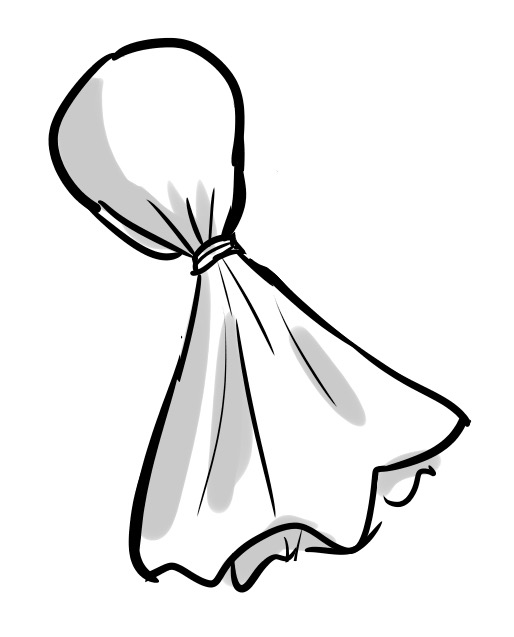

Crumple up some tissue paper into a small ball and place on top of a flat tissue paper.
Enclose the crumpled up ball in the center and lightly twist right below the crumpled ball.
Then tie the string around the twist point and cut any excess. The results should look like this.
Draw a face!
Tape string to the top of the head then hang up.